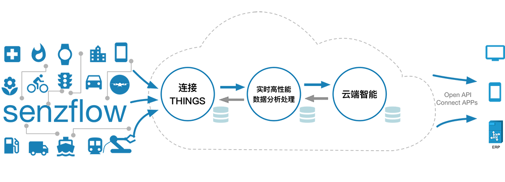
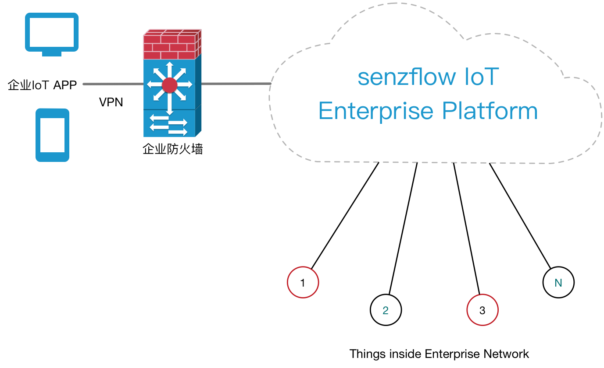

Toggle navigation
senzflow
首页
管理控制台
解决方案
文档中心
下载中心
登录
注册
退出
中文
中文
英文
senzflow iot
云端智能,感知万物,发掘价值

senzflow iot cloud
安全 连接 管理 分析
安全
安全的基础平台：基于安全可靠的云平台基础设施
安全的设备接入机制：网关与云端接口采用SSL证书认证加密
安全的数据存储：数据冗余备份，容灾设计
安全的访问管理机制：完善的帐户管理和鉴权机制，对所有资源进行细粒度的权限管理
安全的设备控制机制：通过云端对设备进行控制需进行双重确认/认证
连接
连接设备，连接应用，连接企业，连接人
支持多种连接协议：HTTPS, MQTT, WebSocket…
对连接接口协议进行SDK封装，支持快速开发
安安全的连接，认证和鉴权机制
分布式的云计算架构，可以满足无限多的设备和应用接入
灵活的接口协议和消息数据格式，可以满足用户多种不同需求
管理
管理设备，管理数据，管理存储，管理鉴权
监测设备状态，对设备进行配置和控制
丰富的可视化管理工具
设备，数据和存储等统计工具
完善的帐户管理和鉴权机制，对所有资源进行细粒度的权限管理
分析
高性能实时数据流分析处理，实时数据智能分析引擎
高性能时序数据库
简洁的事件/数据流处理编辑工具
功能强大的基于SQL语法的事件数据流处理引擎
大数据分析处理：数据结构化，归纳，统计，预测，决策
可定制的可视化图形显示模版
开放API供用户导出实时数据处理及大数据分析结果
senzflow Things
借助senzflow云端智能,采用新方法新Things来解决工业和商业中遇到的问题
网关
工业级网关，与Sensors一起组成安全可靠的网络
支持通过Ethernet，Wi-Fi 或3G/4G与senzflow IoT Cloud安全连接
适应多种应用场景，支持多种传感器网络协议：IEEE802.15.4，LoRa，Wi-Fi等
网关与云端数据实时传输，即使断网情况下也能保证数据完整
自带多种传感器扩展接口
传感器
senzflow 传感器，解决工业和商业迫切需求，简化实施方案
适应多种工业和商业用途，按需选择网络协议：IEEE802.15.4，LoRa，Wi-Fi等
基于低功耗技术和优化的应用层协议，与Gateway一起构建安全可靠的网络
采集最有意义的数据，并保证数据传输可靠性和完整性
SDK
senzflow提供开放接口。无人机，机器人等智能设备可以通过开放API连接到senzflow IoT Cloud，借助其强大的数据分析平台实现云端智能
与各芯片，模组供应商合作，结合senzflow SDK实现最优化的解决方案
senzflow IoT Cloud平台提供简单易用的模拟工具，提高开发者效率
senzflow ioT 企业解决方法

senzflow IoT企业解决方案与senzflow IoTCloud具有相同的功能
按需定制：开放的接口，灵活的设计，可以为企业需求提供定制化功能
senzflow IoT平台部署在企业网络内部，符合企业安全要求
企业将获得更多的控制权
senzflow IoT Enterprise Platform可以与企业应用有机结合在一起